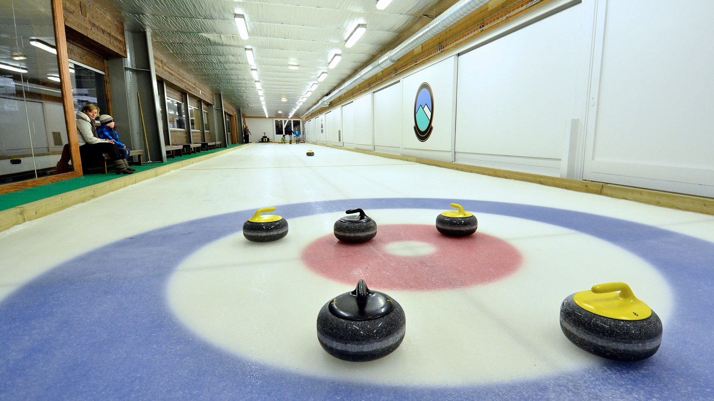
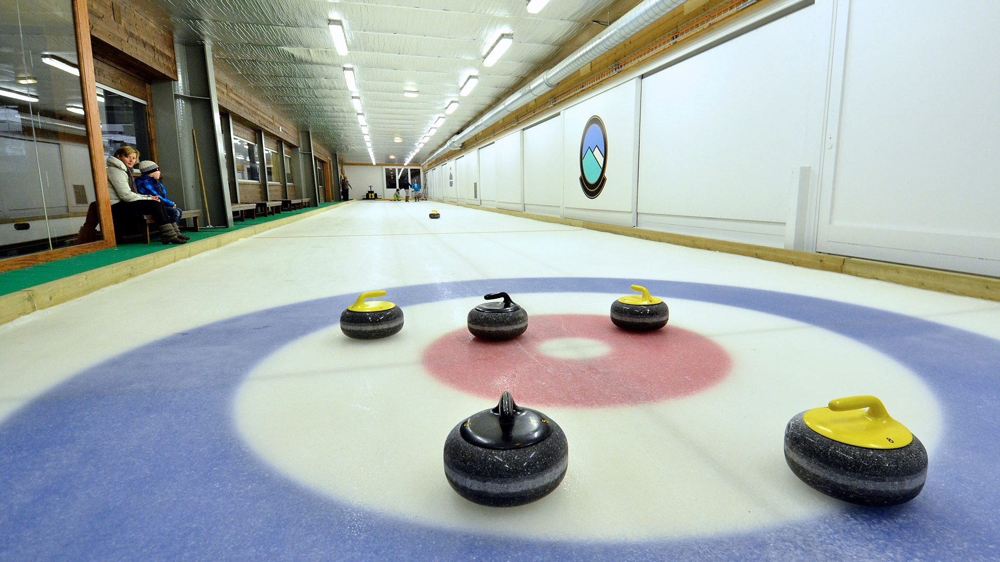
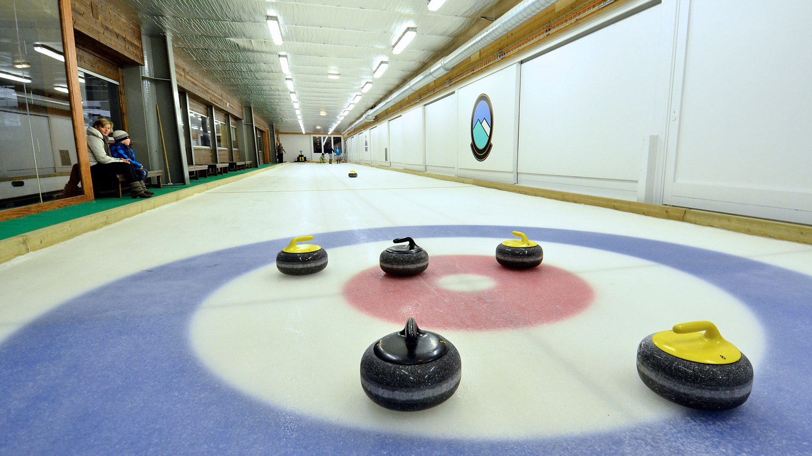

⬆

Ке́рлінг (англ. curling англ. вимова: [ˈkɜː(ɹ)lɪŋ], від curl — «крутити») — олімпійський вид спорту, командна спортивна гра на льодовому майданчику. За своїм принципом гра подібна до боулінгу на траві. Гра складна, і за технікою, і стратегічно.
Керлінг входить до програми Олімпійських ігор, починаючи із Олімпіади 1998 в Нагано. 1924 року керлінг був демонстраційним видом спорту на перших Зимових іграх у Шамоні. У 2006 Міжнародний Олімпійський комітет вирішив ретроспективно визнати офіційними змагання з керлінгу, що проводилися в рамках Міжнародного спортивного тижня в 1924. Під час Олімпіади 1932 теж проводився показовий матч із керлінгу між командами США та Канади.
Керлінг зародився в Шотландії в добу пізнього середньовіччя. Перша письмова згадка про гру датується 1541 роком. Камінь для керлінгу, на поверхні якого вибита дата його виготовлення «1511 рік», знайдений на дні осушеного ставка в Данблейні. Пітеру Брейгелю Старшому належать дві картини від 1565, на яких зображені гравці в керлінг.
Шотландці поширили гру у світі, надто в Канаді, США та в континентальній Європі. Станом на сьогодні в неї грають також в Японії, Кореї, Китаї, Австралії та Новій Зеландії.
Найстарший керлінговий клуб у світі це асоціація гравців міста Кілс, розташованого на півночі Шотландії. Асоціація заснована 1716 року.
У керлінг грають дві команди по чотири гравці (скіп, віце-скіп, перший та другий ), які почергово кидають гладенькі відполіровані гранітні бити крижаною доріжкою у напрямку до цілі, відзначеної на доріжці концентричними колами. Два гравці допомагають спрямувати шайбу в потрібну точку за допомогою спеціальних щіток, якими вони натирають лід у напрямку руху шайби, внаслідок чого на льодовій поверхні утворюється тонкий шар вологи, що сприяє збільшенню швидкості бити. Гра ділиться на 10 ендів, деякі фахівці називають енди іннінгами, у кожному з яких командам нараховуються очки, залежно від того, скільки своїх бит виявилося ближче до цілі, ніж найближча бита команди-супротивника. Протягом одного енду команди по черзі випускають по вісім каменів. Переможець визначається за сумою очок у всіх ендах. У разі рівності очок після десяти ендів, призначається додатковий енд — екстра-енд, переможець якого й стає переможцем матчу.
Майданчик для керлінгу являє собою прямокутне поле. Його довжина може бути від 44,5 до 45,72 м, ширина від 4,42 до 5 м. Мішень, звана «будинком», має діаметр 3,66 м. Відстань між центрами двох мішеней, нанесених на ігрову поверхню — 34,75 м. Битку, кам'яний диск із ручкою вагою 19,96 кг, виготовляється з певного виду граніту, видобутого на острові Ейлс-Крейг в Шотландії. Він має циліндричну форму та кільцеподібну ковзаючу поверхню. Зверху в каменю є ручка. Температура льоду для керлінгу близько -5 °C.
Гравець, котрий кидає битку, одягає на взуття тефлоновий слайдер, що забезпечує гарне ковзання. Для запобігання травм гравці використовують наколінники.